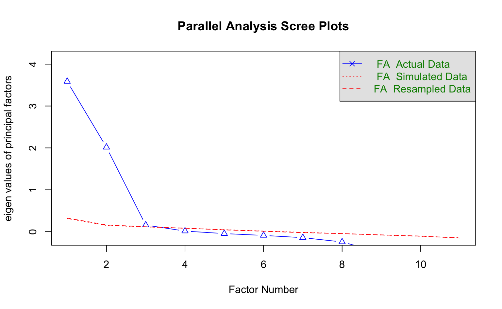
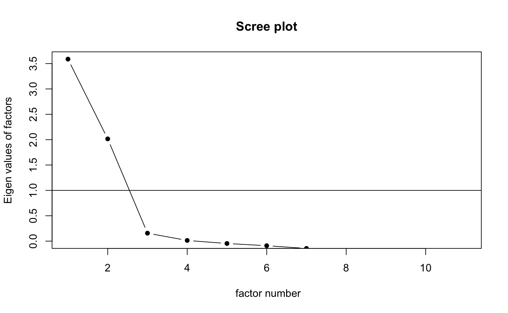
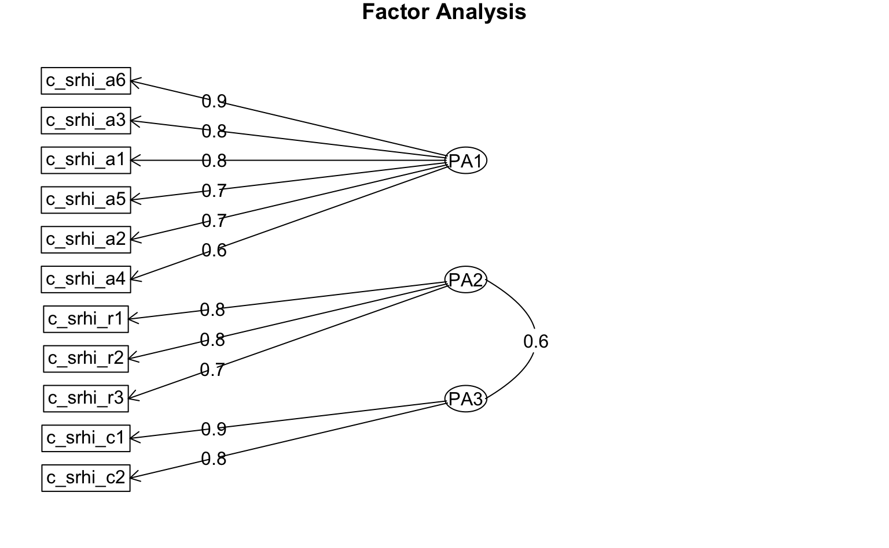
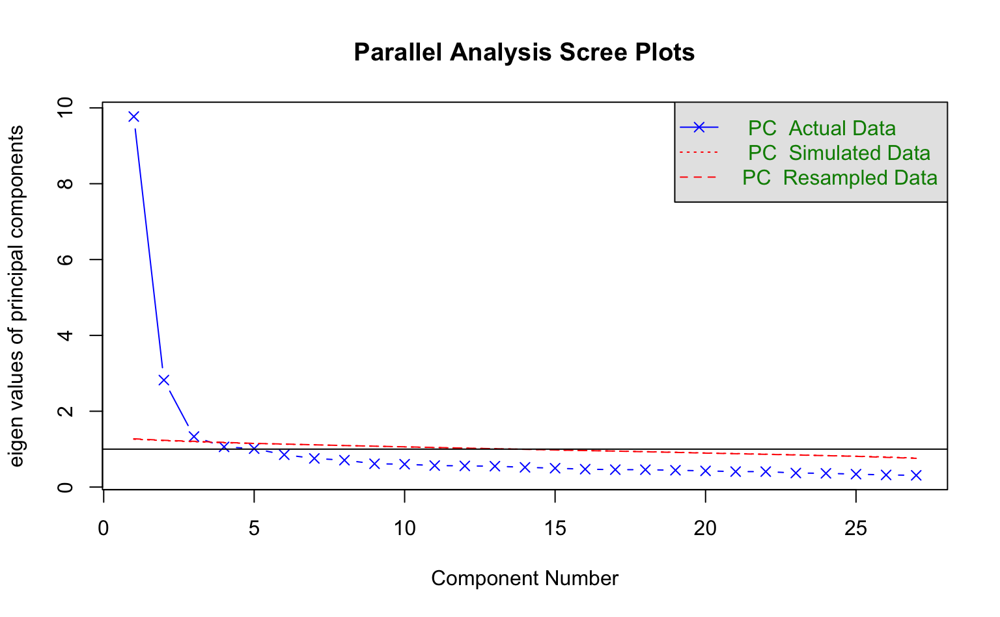

library(psych)
library(tidyverse)
library(report)7 Explorative Faktorenanalyse
Quelle
Schnauber, A. (2017). Medienselektion im Alltag. Springer Fachmedien Wiesbaden. https://doi.org/10.1007/978-3-658-15441-7
7.1 Pakete und Daten
Wir laden zunächst die notwendigen R-Pakete. Für die explorative Faktorenanalyse benötigen wir das psych- Paket. Wie immer laden wir außerdem tidyverse und report.
Für die explorative Faktorenanalyse nutzen wir den Excel-Datensatz gewohnheiten.xlsx. Dieser enthält u.a. Skalen zur Messung der Gewohnheitsstärke bei der Nutzung von Fernsehen, Computer und Smartphone.
d_habit <- readxl::read_excel("data/gewohnheiten.xlsx")
d_habit# A tibble: 791 × 195
id vf_fernseher vf_computer vf_tablet vf_radio vf_zeitung vf_smartphone
<dbl> <dbl> <dbl> <dbl> <dbl> <dbl> <dbl>
1 403074747 1 1 0 1 0 1
2 403087148 1 1 1 1 0 1
3 403129944 1 1 0 1 1 2
4 403143142 1 1 0 0 0 2
5 403200247 1 1 0 1 0 1
# ℹ 786 more rows
# ℹ 188 more variables: i1_fernseher <dbl>, i1_computer <dbl>, i1_tablet <dbl>,
# i1_smartphone <dbl>, i1_radio <dbl>, i1_zeitung <dbl>, vm_ferseher <dbl>,
# vm_computer <dbl>, vm_tablet <dbl>, vm_smartphone <dbl>, vm_radio <dbl>,
# vm_zeitung <dbl>, r_fernseher <dbl>, r_computer <dbl>, r_tablet <dbl>,
# r_smartphone <dbl>, r_radio <dbl>, r_zeitung <dbl>, f_einst1 <dbl>,
# f_einst2 <dbl>, f_einst3 <dbl>, f_einst4 <dbl>, f_srhi_r1 <dbl>, …7.2 Überprüfung der Items
Zunächst machen wir uns mit den relevanten Variablen vertraut und nutzen dafür die report_table()-Funktion. Die Skala für die Gewohnheitsstärke bei der Computer-Nutzung ist in den elf Variablen c_srhi_X enthalten, die wir für die weiteren Schnitte ausschneiden und in einem neuen Datensatz speichern.
d_efa <- d_habit |>
select(c_srhi_r1:c_srhi_c2)
d_efa |>
report::report_table()Variable | n_Obs | Mean | SD | Median | MAD | Min | Max | Skewness | Kurtosis | percentage_Missing
--------------------------------------------------------------------------------------------------------
c_srhi_r1 | 791 | 4.57 | 0.85 | | 0.00 | 1.00 | 5.00 | -2.37 | 5.67 | 2.65
c_srhi_r2 | 791 | 4.31 | 1.04 | | 0.00 | 1.00 | 5.00 | -1.67 | 2.23 | 2.65
c_srhi_r3 | 791 | 4.45 | 0.92 | | 0.00 | 1.00 | 5.00 | -2.02 | 4.02 | 2.65
c_srhi_a1 | 791 | 2.03 | 1.31 | | 0.00 | 1.00 | 5.00 | 1.03 | -0.22 | 2.65
c_srhi_a2 | 791 | 2.49 | 1.38 | | 1.48 | 1.00 | 5.00 | 0.44 | -1.08 | 2.65
c_srhi_a3 | 791 | 1.79 | 1.19 | | 0.00 | 1.00 | 5.00 | 1.40 | 0.79 | 2.65
c_srhi_a4 | 791 | 2.68 | 1.28 | | 1.48 | 1.00 | 5.00 | 0.20 | -1.01 | 2.65
c_srhi_a5 | 791 | 2.46 | 1.41 | | 1.48 | 1.00 | 5.00 | 0.45 | -1.15 | 2.65
c_srhi_a6 | 791 | 1.87 | 1.19 | | 0.00 | 1.00 | 5.00 | 1.25 | 0.47 | 2.65
c_srhi_c1 | 791 | 3.52 | 1.23 | | 1.48 | 1.00 | 5.00 | -0.50 | -0.66 | 2.65
c_srhi_c2 | 791 | 3.89 | 1.25 | | 1.48 | 1.00 | 5.00 | -0.94 | -0.19 | 2.65Grundsätzlich sollten die Items, die wir für eine Faktoranalyse verwenden wollen, ein metrisches Skalenniveau aufweisen (d.h. mindestens intervallskaliert) oder dichotom sein. Es sollten außerdem mindestens 100 Fälle sein (eher mehr) bzw. insgesamt mindestens 10x mehr Personen als Items, die in die Analyse einbezogen werden sollen (Daumenregel). In unserem Datensatz erfüllen wir diese Mindestanzahl locker. Die Items sind alle auf einer 5-er Skala erhoben und wenigstens quasi-metrisch.
7.2.1 Korrelationsmatrix und Bartlett-Test
Anschließend überprüfen wir, ob die Items überhaupt für eine explorative Faktorenanalyse geeignet sind, d.h. ob es gemeinsame Varianz gibt. Die Korrelationsmatrix zeigt, ob und wie die einzelnen Variablen miteinander zusammenhängen. Die Items, die auf einen Faktor laden, müssen zwangsweise miteinander korrelieren, daher können wir durch Inspektion der Korrelationsmatrix bereits einen ersten Eindruck gewinnen, ob eine oder mehrere Faktoren dahinterliegen könnten. Wir berücksichtigen nur die Befragten, die für alle 9 Variablen gültige Werte angegeben haben.
d_efa |>
cor(use = "complete.obs") |>
round(2) c_srhi_r1 c_srhi_r2 c_srhi_r3 c_srhi_a1 c_srhi_a2 c_srhi_a3 c_srhi_a4
c_srhi_r1 1.00 0.62 0.57 -0.04 0.05 -0.10 0.09
c_srhi_r2 0.62 1.00 0.63 0.05 0.17 0.03 0.16
c_srhi_r3 0.57 0.63 1.00 -0.04 0.12 -0.07 0.07
c_srhi_a1 -0.04 0.05 -0.04 1.00 0.53 0.69 0.45
c_srhi_a2 0.05 0.17 0.12 0.53 1.00 0.53 0.46
c_srhi_a3 -0.10 0.03 -0.07 0.69 0.53 1.00 0.39
c_srhi_a4 0.09 0.16 0.07 0.45 0.46 0.39 1.00
c_srhi_a5 0.13 0.24 0.16 0.57 0.59 0.57 0.41
c_srhi_a6 -0.10 0.03 -0.05 0.68 0.56 0.79 0.41
c_srhi_c1 0.36 0.51 0.39 0.21 0.26 0.22 0.18
c_srhi_c2 0.36 0.49 0.45 0.12 0.18 0.11 0.13
c_srhi_a5 c_srhi_a6 c_srhi_c1 c_srhi_c2
c_srhi_r1 0.13 -0.10 0.36 0.36
c_srhi_r2 0.24 0.03 0.51 0.49
c_srhi_r3 0.16 -0.05 0.39 0.45
c_srhi_a1 0.57 0.68 0.21 0.12
c_srhi_a2 0.59 0.56 0.26 0.18
c_srhi_a3 0.57 0.79 0.22 0.11
c_srhi_a4 0.41 0.41 0.18 0.13
c_srhi_a5 1.00 0.58 0.35 0.23
c_srhi_a6 0.58 1.00 0.22 0.09
c_srhi_c1 0.35 0.22 1.00 0.73
c_srhi_c2 0.23 0.09 0.73 1.00Wir sehen, dass es einige Items gibt, die relativ hoch miteinander korrelieren. Mit dem Bartlett-Test können wir diese visuelle Inspektion auch formalisieren. Er überprüft die Nullhypothese, dass die Stichprobe aus einer Population stammt, in der die Variablen unkorreliert sind. Dies ist ein relativ schwacher Test, da mit ausreichend großen Stichproben fast immer auch kleinere Inter-Item-Korrelationen statistisch signifikant sein werden.
psych::cortest.bartlett(d_efa)$chisq
[1] 4432.899
$p.value
[1] 0
$df
[1] 55Der Bartlett-Test ist wie erwartet signifikant (p < .001), d.h. die Items sind korreliert und die Voraussetzung für eine Faktorenanalyse erfüllt.
7.2.2 KMO-Wert
Der KMO-wert (Kaiser-Meyer-Olkin-Wert) ist ein Maß für den Anteil der Varianz zwischen den Variablen, der vermutlich gemeinsame Varianz ist. D. h., der KMO-Wert gibt an, wie stark die Variablen zusammengehören und ob eine EFA sinnvoll ist. Der KMO-Wert kann Werte zwischen 0 und 1 annehmen. Je höher der KMO-Wert, desto besser eignen sich die Daten für eine Faktorenanalyse.
Kaiser (1975) schlägt als Bewertung des KMO-Werts folgendes vor:
≥ .90 = marvelous (“erstaunlich”) ≥ .80 = meritorius (“verdienstvoll”) ≥ .70 = middling (“ziemlich gut”) ≥ .60 = mediocre (“mittelmäßig”) ≥ .50 = miserable (“kläglich”) < .50 = unacceptable (“untragbar”)
psych::KMO(d_efa)Kaiser-Meyer-Olkin factor adequacy
Call: psych::KMO(r = d_efa)
Overall MSA = 0.84
MSA for each item =
c_srhi_r1 c_srhi_r2 c_srhi_r3 c_srhi_a1 c_srhi_a2 c_srhi_a3 c_srhi_a4 c_srhi_a5
0.82 0.82 0.83 0.91 0.91 0.83 0.92 0.92
c_srhi_a6 c_srhi_c1 c_srhi_c2
0.84 0.76 0.74 Wir erhalten eine KMO-Wert für alle Items (insgesamt) und für jedes einzelne Item. Da alle Items > .70 (ziemlich gut) sind und auch der Gesamtwert > .80 (verdienstvoll) ist, können wir darauf schließen, dass sich die Items gut für die Durchführung einer Faktorenanalyse eignen.
7.3 Explorative Faktorenanalyse
7.3.1 Extraktions-Methode
In der Literatur zur EFA werden in der Regel drei alternative Ansätze diskutiert:
- Hauptkomponentenanalyse (Principal component analysis, PCA)
- Hauptachsenanalyse (Principal axis factoring, PAF)
- Maximum-Likelihood-Faktoranalyse (ML)
Die Hauptkomponentenanalyse wenden wir ausschließlich an, wenn unser Ziel eine Datenreduktion ist, d.h. wir eine größere Anzahl Items durch eine geringere Anzahl Komponenten ersetzen wollen und dabei aber deren Varianz möglichst maximal erhalten wollen.
Die Hauptachsenanalyse oder Maximum Likelihood Schätzung verwenden wir, wenn latente Variablen identifiziert werden sollen, die für die Beantwortung der Items ausschlaggebend sind. Anders formuliert: Die Antworten auf die gemessenen Items lassen sich durch einen oder mehrere Faktoren erklären bzw. spiegeln die latenten Variablen wider (reflektives Messmodell). Dies ist in fast allen kommunikationswissenschaftlichen Anwendungen das Ziel, daher wählen wir die Hauptachsenanalyse.
7.3.2 Anzahl der Faktoren bestimmen
Bevor wir eine EFA durchführen, müssen wir die optimale Anzahl von Faktoren bestimmen, die extrahiert werden sollen. Leider gibt es kein einheitliches Konzept oder Kriterium für die Extraktion von Faktoren (von einem einzigen Faktor bis jedes Item = ein Faktor ist alles möglich). Technisch gibt es immer so viele Faktoren wie Items, aber wir extrahieren nur die wichtigsten. Unsere Entscheidung sollte im Idealfall auf mehreren Kriterien beruhen, von denen die klare Interpretierbarkeit das wichtigste ist: Möglichst alle Items sollten nur zu einem Faktoren gehören (auf einen Faktor laden), was als Einfachstruktur bezeichnet wird, und jeder Faktor sollte sich in mehreren Items widerspiegeln (sonst wäre Item = Faktor, keine gemeinsame Varianz).
Verfahren zur Bestimmung der Faktoranzahl sind:
- A-priori-Kriterium: Wir definieren eine Faktorenanzahl aufgrund theoretischer Überlegungen (dann sind wir aber schon fast bei der konfirmatorischen Faktorenanalyse)
- Parallel-Analyse: die empirische Faktorstruktur wird mit einer zufälligen Datenmatrix auf Basis derselben Variablenzahl verglichen
- Kaiser-Kriterium: Identifikation von Faktoren, deren Eigenwert > 1 ist, da Faktoren unterhalb dieser Grenze weniger Varianz erklären als eine einzelne Variable
Eine Parallel-Analyse führen wir mit der fa.parallel()-Funktion durch. Hier wählen wir aus, dass wir eine Faktorenanalyse (keine Hauptkomponentenanalyse) durchführen wollen verwenden dafür fm = "pa" (Principal Axis) zur Extraktion.
psych::fa.parallel(d_efa, fa = "fa", fm = "pa")
Parallel analysis suggests that the number of factors = 3 and the number of components = NA Da es keine inferenzstatistischen Tests für die optimale Anzahl an Faktoren gibt, wird oft mit Hilfe eines Scree-Plots visuell inspiziert, wie viele Faktoren es geben könnte. Hierbei sucht man entweder nach dem Knick (Ellenbogen-Kriterium) oder dem Schnittpunkt für ein Kriteriumswert.
Mit Hilfe der scree()-Funktion sehen wir, wie viele Faktoren einen Eigenwert > 1 haben (Kaiser-Kriterium) und wo optisch der “Knick” ist.
psych::scree(d_efa, pc = F)
Die Parallel-Analyse schlägt drei Faktoren vor, nach dem Kaiser-Kriterium und dem Scree-Plot ergeben sich jedoch zwei Faktoren. Dies zeigt ganz anschaulich, dass es bei explorativen Faktoranalysen häufig kein eindeutiges Ergebnis gibt. Wir entscheiden uns dafür, die Analyse mit drei Faktoren zu rechnen.
7.3.3 Durchführung der eigentlichen Faktoranalyse und Rotation
Für die eigentliche explorative Faktorenanalyse nutzen wir die fa()-Funktion. Hier müssen wir die Anzahl der Faktoren, die Methode (pa = principal axis factoring) und die Art der Rotation unserer Matrix angeben.
Rotationen minimieren die Komplexität der Faktorenladungen, um die Struktur einfacher zu interpretieren. Es gibt zwei Arten der Rotation:
Orthogonale Rotationen erzwingen, dass die Faktoren unkorreliert sind, was aber häufig unrealistisch ist (wir nehmen ja an, dass die Items korrelieren und zu einem latenten Faktor gehören). Die Erzwingung der Unkorreliertheit macht es weniger wahrscheinlich, dass die Rotation eine Lösung mit einer einfachen Struktur ergibt. Oblique Rotationen erlauben es, dass die Faktoren miteinander korreliert sind. Dies führt häufig zu Lösungen mit einer einfacheren Struktur und steht im Einklang mit der Theorie.
Wir empfehlen, zuerst eine oblique Rotation (z. B. ‘oblimin’) durchzuführen und die Korrelationen der Faktoren zu überprüfen. Korrelieren diese tatsächlich nicht, ist auch eine orthogonale Rotation angemessen.
results_efa <- d_efa %>%
fa(
nfactors = 3,
fm = "pa",
rotate = "oblimin"
)
# Output anpassen
print(results_efa,
digits = 2, ## auf 2 Nachkommastellen runden
sort = TRUE ## Items zu den Faktoren sortieren
)Factor Analysis using method = pa
Call: fa(r = ., nfactors = 3, rotate = "oblimin", fm = "pa")
Standardized loadings (pattern matrix) based upon correlation matrix
item PA1 PA2 PA3 h2 u2 com
c_srhi_a6 9 0.85 -0.10 0.01 0.74 0.26 1.0
c_srhi_a3 6 0.83 -0.14 0.06 0.72 0.28 1.1
c_srhi_a1 4 0.81 -0.03 -0.01 0.64 0.36 1.0
c_srhi_a5 8 0.72 0.19 0.03 0.57 0.43 1.1
c_srhi_a2 5 0.71 0.17 -0.04 0.51 0.49 1.1
c_srhi_a4 7 0.55 0.18 -0.08 0.31 0.69 1.3
c_srhi_r1 1 -0.04 0.77 -0.03 0.57 0.43 1.0
c_srhi_r2 2 0.06 0.76 0.11 0.70 0.30 1.1
c_srhi_r3 3 -0.03 0.72 0.06 0.57 0.43 1.0
c_srhi_c1 10 0.06 0.00 0.85 0.76 0.24 1.0
c_srhi_c2 11 -0.06 0.04 0.83 0.70 0.30 1.0
PA1 PA2 PA3
SS loadings 3.39 1.89 1.51
Proportion Var 0.31 0.17 0.14
Cumulative Var 0.31 0.48 0.62
Proportion Explained 0.50 0.28 0.22
Cumulative Proportion 0.50 0.78 1.00
With factor correlations of
PA1 PA2 PA3
PA1 1.00 0.02 0.27
PA2 0.02 1.00 0.59
PA3 0.27 0.59 1.00
Mean item complexity = 1.1
Test of the hypothesis that 3 factors are sufficient.
df null model = 55 with the objective function = 5.64 with Chi Square = 4432.9
df of the model are 25 and the objective function was 0.17
The root mean square of the residuals (RMSR) is 0.02
The df corrected root mean square of the residuals is 0.03
The harmonic n.obs is 770 with the empirical chi square 40.69 with prob < 0.025
The total n.obs was 791 with Likelihood Chi Square = 129.92 with prob < 3.8e-16
Tucker Lewis Index of factoring reliability = 0.947
RMSEA index = 0.073 and the 90 % confidence intervals are 0.061 0.086
BIC = -36.91
Fit based upon off diagonal values = 1
Measures of factor score adequacy
PA1 PA2 PA3
Correlation of (regression) scores with factors 0.95 0.92 0.93
Multiple R square of scores with factors 0.91 0.84 0.86
Minimum correlation of possible factor scores 0.81 0.69 0.72Die Mustermatrix enthält die standardisierten Ladungen der einzelnen Items auf die jeweiligen Faktoren. Für die Übersichtlichkeit ist es häufig schöner, wenn geringe Faktorladungen nicht in der Matrix angezeigt werden. Dies erreichen wir mit cut = .3:
print(results_efa,
digits = 2, ## auf 2 Nachkommastellen runden
cut = .3, ## Ladungen unter .3 nicht anzeigen
sort = TRUE
) ## Items zu den Faktoren sortierenFactor Analysis using method = pa
Call: fa(r = ., nfactors = 3, rotate = "oblimin", fm = "pa")
Standardized loadings (pattern matrix) based upon correlation matrix
item PA1 PA2 PA3 h2 u2 com
c_srhi_a6 9 0.85 0.74 0.26 1.0
c_srhi_a3 6 0.83 0.72 0.28 1.1
c_srhi_a1 4 0.81 0.64 0.36 1.0
c_srhi_a5 8 0.72 0.57 0.43 1.1
c_srhi_a2 5 0.71 0.51 0.49 1.1
c_srhi_a4 7 0.55 0.31 0.69 1.3
c_srhi_r1 1 0.77 0.57 0.43 1.0
c_srhi_r2 2 0.76 0.70 0.30 1.1
c_srhi_r3 3 0.72 0.57 0.43 1.0
c_srhi_c1 10 0.85 0.76 0.24 1.0
c_srhi_c2 11 0.83 0.70 0.30 1.0
PA1 PA2 PA3
SS loadings 3.39 1.89 1.51
Proportion Var 0.31 0.17 0.14
Cumulative Var 0.31 0.48 0.62
Proportion Explained 0.50 0.28 0.22
Cumulative Proportion 0.50 0.78 1.00
With factor correlations of
PA1 PA2 PA3
PA1 1.00 0.02 0.27
PA2 0.02 1.00 0.59
PA3 0.27 0.59 1.00
Mean item complexity = 1.1
Test of the hypothesis that 3 factors are sufficient.
df null model = 55 with the objective function = 5.64 with Chi Square = 4432.9
df of the model are 25 and the objective function was 0.17
The root mean square of the residuals (RMSR) is 0.02
The df corrected root mean square of the residuals is 0.03
The harmonic n.obs is 770 with the empirical chi square 40.69 with prob < 0.025
The total n.obs was 791 with Likelihood Chi Square = 129.92 with prob < 3.8e-16
Tucker Lewis Index of factoring reliability = 0.947
RMSEA index = 0.073 and the 90 % confidence intervals are 0.061 0.086
BIC = -36.91
Fit based upon off diagonal values = 1
Measures of factor score adequacy
PA1 PA2 PA3
Correlation of (regression) scores with factors 0.95 0.92 0.93
Multiple R square of scores with factors 0.91 0.84 0.86
Minimum correlation of possible factor scores 0.81 0.69 0.72Je stärker die Faktorladung (= Korrelation zwischen Variable und Faktor), desto stärker wird das Item bei der Interpretation des Faktors berücksichtigt (Hair et al., 1998, S. 111). Dabei ist eine Ladung von 0,30 das minimale Level (weshalb wir alles < .30 nicht anzeigen), ab 0,50 ist die Ladung bedeutsam und ab 0,70 hoch. Wünschenswert ist, dass die Variablen auf einen Faktor hoch laden und auf die anderen Faktoren niedrig.
Die Spalte „h2“ gibt den Anteil der Varianz an, der durch die Faktoren erklärt wird (Kommunalitäten). Die Spalte „u2“ steht für die Einzigartigkeit und ist einfach 1-h2. Die Spalte „com“ steht für den Hoffmannschen Komplexitätsindex. Er ist gleich 1, wenn ein Item nur auf einen Faktor lädt. Wir erhalten außerdem Tabellen für die erklärte Varianz und die Korrelationen zwischen den Faktoren und Informationen über die Modellanpassung.
7.3.4 Ausschluss von Variablen
Beim Betrachten der Faktorladungen sollten wir immer überlegen ob es Items gibt, die wir ausschließen sollten. Ein Item (c_srhi_a4) lädt wesentlich weniger auf den zugehörigen Faktor (PA1) - betrachtet man die Itemformulierung, kann man sich auch denken, warum dieses Item so schlecht lädt (“Während ich den Computer einschalte, denke ich oft an ganz andere Dinge.”). Das Item c_srhi_a4 beinhaltet eher Ablenkungsaspekte oder Multitasking und streng genommen nicht eine fehlende Bewusstheit der Nutzung. Wir schließen dieses Item jedoch zunächst nicht aus.
Generell sollten Items ausgeschlossen werden, wenn
- sie zu niedrige Ladungen aufweisen
- sie auf zwei Faktoren hochladen (Daumenregel: weniger als .3 auseinander)
- sie alleine einen eigenen Faktor aufspannen
- die Kommunalität < .50 ist.
7.3.5 Interpretation der Faktorenlösung
Wir sehen, dass der erste Faktor (PA1) aus sechs Items, der zweite (PA2) aus drei Items und der dritte Faktor (PA3) aus zwei Items besteht. Betrachten wir die Items inhaltlich, sehen wir, dass die drei Faktoren verschiedene Dimensionen der Gewohnheit bei der Computernutzung darstellen: PA1 die fehlende Bewusstheit der Computernutzung, PA2 den Wiederholungscharakter der Computernutzung und PA3 die geringe Kontrollierbarkeit der Computernutzung.
Wir können die Beziehungen und Ladungen zwischen den Items und den Faktoren auch grafisch darstellen:
psych::fa.diagram(results_efa)
7.4 Exkurs: Hauptkomponentenanalyse
In Kapitel [extraktion] haben wir gelernt, dass wir in der Regel eine Hauptachsenanalyse durchführen, weil wir latente Variablen hinter den manifesten Variablen vermuten. Manchmal möchten wir jedoch eine große Menge an Variablen reduzieren und durch eine geringere Anzahl an Komponenten ersetzen. Hier kann die Hauptkomponentenanalyse sinnvoll sein.
Grundsätzlich sind viele Schritte bei der Hauptkomponentenanalyse die Gleichen wie bei der Faktorenanalyse. Jedoch sollten wir eben von Komponenten und nicht von Faktoren sprechen. Ein zentraler Unterschied zur explorativen Faktorenanalyse ist, dass die Variablen nicht miteinander korrelieren müssen.
Wir nutzen im Folgenden einen SPSS-Datensatz, der mögliche Funktionen von informeller Kommunikation in Organisationen enthält. In einer Literaturanalyse wurden neun Funktionen herausgearbeitet, deren Relevanz für Mitarbeitende mit Hilfe von je drei Items auf einer 5er-Skala erhoben wurde. Diese 27 Items sollen mit Hilfe einer Hauptkomponentenanalyse verdichtet werden.
Wir machen uns zunächst wieder mit den relevanten Variablen vertraut und nutzen dafür die report_table()-Funktion. Die Items zu den Funktionen informeller Kommunikation ist in den 27 Variablen F201_x enthalten, die wir wieder für die weiteren Schritte ausschneiden und in einem neuen Datensatz speichern.
d_informell <- haven::read_sav("data/InfKomm.sav") |>
haven::zap_labels()
d_pca <- d_informell |>
select(F201_01:F201_52)
d_pca |>
report::report_table()Variable | n_Obs | Mean | SD | Median | MAD | Min | Max | Skewness | Kurtosis | percentage_Missing
-------------------------------------------------------------------------------------------------------
F201_01 | 1380 | 3.36 | 1.20 | | 1.48 | 1.00 | 5.00 | -0.37 | -0.80 | 1.38
F201_02 | 1380 | 3.25 | 1.25 | | 1.48 | 1.00 | 5.00 | -0.30 | -0.94 | 0.51
F201_03 | 1380 | 3.57 | 1.16 | | 1.48 | 1.00 | 5.00 | -0.53 | -0.58 | 1.09
F201_05 | 1380 | 3.68 | 1.11 | | 1.48 | 1.00 | 5.00 | -0.69 | -0.21 | 0.65
F201_07 | 1380 | 2.40 | 1.19 | | 1.48 | 1.00 | 5.00 | 0.50 | -0.76 | 0.58
F201_08 | 1380 | 3.42 | 1.17 | | 1.48 | 1.00 | 5.00 | -0.43 | -0.67 | 0.87
F201_13 | 1380 | 3.89 | 0.98 | | 1.48 | 1.00 | 5.00 | -0.84 | 0.49 | 0.29
F201_15 | 1380 | 3.06 | 1.38 | | 1.48 | 1.00 | 5.00 | -0.11 | -1.24 | 2.32
F201_16 | 1380 | 3.80 | 1.05 | | 1.48 | 1.00 | 5.00 | -0.70 | -0.10 | 1.16
F201_17 | 1380 | 3.95 | 1.00 | | 1.48 | 1.00 | 5.00 | -0.82 | 0.12 | 1.09
F201_18 | 1380 | 3.22 | 1.22 | | 1.48 | 1.00 | 5.00 | -0.17 | -0.90 | 1.52
F201_20 | 1380 | 3.41 | 1.19 | | 1.48 | 1.00 | 5.00 | -0.39 | -0.75 | 1.09
F201_25 | 1380 | 3.68 | 1.06 | | 1.48 | 1.00 | 5.00 | -0.56 | -0.33 | 0.22
F201_26 | 1380 | 4.14 | 0.89 | | 1.48 | 1.00 | 5.00 | -1.06 | 1.04 | 0.94
F201_27 | 1380 | 3.84 | 0.99 | | 1.48 | 1.00 | 5.00 | -0.73 | 0.11 | 0.43
F201_29 | 1380 | 3.82 | 1.01 | | 1.48 | 1.00 | 5.00 | -0.77 | 0.20 | 1.16
F201_30 | 1380 | 3.29 | 1.18 | | 1.48 | 1.00 | 5.00 | -0.34 | -0.73 | 1.30
F201_31 | 1380 | 3.40 | 1.14 | | 1.48 | 1.00 | 5.00 | -0.40 | -0.65 | 2.61
F201_41 | 1380 | 3.93 | 0.98 | | 1.48 | 1.00 | 5.00 | -0.85 | 0.38 | 0.72
F201_42 | 1380 | 3.73 | 1.10 | | 1.48 | 1.00 | 5.00 | -0.65 | -0.34 | 1.67
F201_44 | 1380 | 4.08 | 0.90 | | 1.48 | 1.00 | 5.00 | -0.97 | 0.83 | 1.16
F201_45 | 1380 | 3.60 | 1.11 | | 1.48 | 1.00 | 5.00 | -0.59 | -0.35 | 1.23
F201_47 | 1380 | 3.77 | 1.05 | | 1.48 | 1.00 | 5.00 | -0.69 | -0.12 | 1.45
F201_48 | 1380 | 3.97 | 0.95 | | 1.48 | 1.00 | 5.00 | -0.86 | 0.46 | 0.72
F201_49 | 1380 | 3.67 | 1.06 | | 1.48 | 1.00 | 5.00 | -0.60 | -0.24 | 3.33
F201_51 | 1380 | 3.22 | 1.19 | | 1.48 | 1.00 | 5.00 | -0.21 | -0.87 | 2.83
F201_52 | 1380 | 4.06 | 0.92 | | 1.48 | 1.00 | 5.00 | -0.91 | 0.62 | 0.87# F201_01: Informelle Kommunikation ist ein Mittel, mit dem ich Spannungen und Stress abbauen kann.
# F201_02: Ich nutze informelle Kommunikation, um eine Pause zu machen und mich zu erholen.
# F201_03: Informelle Kommunikation hilft mir, meinem Ärger Luft zu machen, wenn mich etwas stört.
# F201_05: Informelle Kommunikation bietet mir Abwechslung vom Arbeitsalltag.
# F201_07: Ich nutze informelle Kommunikation, um mich von der Arbeit abzulenken.
# F201_08: Ich nutze informelle Kommunikation zur Unterhaltung.
# F201_13: Durch informelle Kommunikation fühle ich mich mit meinen Kolleg:innen verbunden.
# F201_15: Durch informelle Kommunikation fühle ich mich weniger einsam.
# F201_16: Durch informelle Kommunikation fühle ich mich sozial zugehörig.
# F201_17: Informelle Kommunikation hilft mir dabei, meine Kolleg:innen privat besser kennenzulernen.
# F201_18: Durch informelle Kommunikation kann ich Freundschaften schließen.
# F201_20: Informelle Kommunikation hilft mir dabei, Bekanntschaften zu knüpfen.
# F201_25: Durch informelle Kommunikation erhalte ich Informationen, die mir helfen, meine Arbeit zu erledigen.
# F201_26: Informelle Kommunikation liefert zusätzliche Informationen zu der formellen Kommunikation in der Organisation.
# F201_27: Informelle Kommunikation informiert mich über aktuelle Ereignisse und bevorstehende Veränderungen im Unternehmen.
# F201_29: Informelle Kommunikation hilft mir, mich persönlich in mein Team einzufinden.
# F201_30: Durch informelle Kommunikation fühle ich mich der Organisation zugehörig.
# F201_31: Durch informelle Kommunikation habe ich das Gefühl, dass ich ein geschätztes Mitglied der Organisation bin.
# F201_41: Für mich ist die informelle Kommunikation eine Möglichkeit, berufliche Beziehungen zu meinen Kolleg:innen aufzubauen und zu pflegen.
# F201_42: Informelle Kommunikation unterstützt mich dabei, ein berufliches Netzwerk aufzubauen.
# F201_44: Informelle Kommunikation hilft mir und meinem Team zusammenzuwachsen.
# F201_45: Informelle Kommunikation hilft dabei, den Arbeitsalltag im Team zu organisieren.
# F201_47: Informelle Kommunikation erleichtert die Koordination und Planung von Teamarbeit.
# F201_48: Durch informelle Kommunikation fällt es leichter, gemeinsam Probleme zu lösen.
# F201_49: Informelle Kommunikation kann dabei helfen, die Organisationskultur gemeinsam zu entwickeln.
# F201_51: Informelle Kommunikation hilft mir, die Organisation zu verstehen, einschließlich ihrer Mission, Vision, Werte, Überzeugungen und Ziele.
# F201_52: Durch informelle Kommunikation entsteht ein positives Arbeitsklima.Da die Variablen nicht korrelieren müssen, brauchen wir uns auch die Korrelationsmatrix nicht anzusehen und auch den Bartlett-Test sowie den KMO-Wert nicht zu berechnen (wir können es natürlich trotzdem tun).
Bevor wir eine PCA durchführen, müssen wir auch hier wieder die optimale Anzahl von Komponenten bestimmen, die extrahiert werden sollen. Dies tun wir mit den bekannten Methoden (Parallel-Analyse, Kaiser-Kriterium, Scree-Plot).
psych::fa.parallel(d_pca, fa = "pc", fm = "pa")
Parallel analysis suggests that the number of factors = NA and the number of components = 3 psych::scree(d_pca, fa = F)
Die Parallel-Analyse schlägt drei Komponenten vor, nach dem Kaiser-Kriterium und dem Scree-Plot ergeben sich jedoch vier Komponenten (wobei der Screeplot nicht eindeutig ist). Wir entscheiden uns dafür, die Analyse mit vier Komponenten zu rechnen.
Für die eigentliche Hauptkomponentenanalyse nutzen wir wieder die principal()-Funktion. Hier müssen wir erneut die Anzahl der Komponenten, die Methode (pc = principal component analysis) und die Art der Rotation unserer Matrix angeben.
results_pca <- d_pca %>%
principal(
nfactors = 4,
rotate = "oblimin"
)
# Output anpassen
print(results_pca,
digits = 2, ## auf 2 Nachkommastellen runden
cut = .3, ## Ladungen unter .3 nicht anzeigen
sort = TRUE ## Items zu den Komponenten sortieren
)Principal Components Analysis
Call: principal(r = ., nfactors = 4, rotate = "oblimin")
Standardized loadings (pattern matrix) based upon correlation matrix
item TC1 TC3 TC2 TC4 h2 u2 com
F201_16 9 0.75 0.70 0.30 1.1
F201_31 18 0.71 0.57 0.43 1.0
F201_30 17 0.69 0.56 0.44 1.2
F201_13 7 0.67 0.64 0.36 1.2
F201_52 27 0.58 0.47 0.53 1.2
F201_15 8 0.58 0.34 0.52 0.48 1.7
F201_44 21 0.54 0.60 0.40 1.8
F201_29 16 0.53 0.57 0.43 1.5
F201_25 13 0.79 0.59 0.41 1.1
F201_27 15 0.69 0.50 0.50 1.3
F201_47 23 0.67 0.60 0.40 1.4
F201_26 14 0.63 0.50 0.50 1.2
F201_45 22 0.63 0.56 0.44 1.4
F201_51 26 0.62 0.44 0.56 1.0
F201_49 25 0.54 0.50 0.50 1.6
F201_48 24 0.33 0.49 0.51 0.49 1.8
F201_41 19 0.38 0.35 0.49 0.51 2.6
F201_07 5 0.81 0.59 0.41 1.0
F201_02 2 0.78 0.60 0.40 1.0
F201_08 6 0.67 0.58 0.42 1.2
F201_05 4 0.62 0.59 0.41 1.2
F201_03 3 0.49 0.40 0.60 1.6
F201_01 1 0.33 0.46 0.48 0.52 2.0
F201_20 12 0.74 0.67 0.33 1.1
F201_18 11 0.68 0.64 0.36 1.2
F201_17 10 0.34 0.56 0.60 0.40 1.9
F201_42 20 0.49 0.51 0.52 0.48 2.2
TC1 TC3 TC2 TC4
SS loadings 4.86 4.44 3.11 2.58
Proportion Var 0.18 0.16 0.12 0.10
Cumulative Var 0.18 0.34 0.46 0.55
Proportion Explained 0.32 0.30 0.21 0.17
Cumulative Proportion 0.32 0.62 0.83 1.00
With component correlations of
TC1 TC3 TC2 TC4
TC1 1.00 0.48 0.32 0.43
TC3 0.48 1.00 0.10 0.26
TC2 0.32 0.10 1.00 0.33
TC4 0.43 0.26 0.33 1.00
Mean item complexity = 1.4
Test of the hypothesis that 4 components are sufficient.
The root mean square of the residuals (RMSR) is 0.05
with the empirical chi square 2042.23 with prob < 1.2e-278
Fit based upon off diagonal values = 0.98Die vier Komponenten können als “Zugehörigkeit und Verbundenheit” (TC1) zu Kolleg:innen und der Organisation, “Information und Koordination” (TC3), “Stressbewältigung und Erholung” (TC2) sowie “soziale Beziehungspflege” (TC4) bezeichnet werden. Wir sehen, dass einige Items Doppelladungen haben, also zu zwei Komponenten gehören, zum Beispiel lädt F201_15 (“Durch informelle Kommunikation fühle ich mich weniger einsam”) auf “Zugehörigkeit und Verbundenheit” (TC1) und “Stressbewältigung und Erholung” (TC2), was inhaltlich ja durchaus Sinn macht.
Wollen wir mit den Komponenten weiter rechnen, bieten sich die sog. Scores an, welche die Ausprägung einer Person bzw. eines Falls auf einem Faktor angibt. Scores sind standardisiert, d. h. sie haben einen Mittelwert von 0 und eine Standardabweichung von 1. Positive Werte bedeuten, dass der Fall in Bezug auf eine Komponente und im Vergleich zu allen anderen Fällen ein überdurchschnittliche Ausprägung aufweist und negative Werte bedeuten, dass der Fall gegenüber einer Komponente und im Vergleich zu allen anderen Fällen eine unterdurchschnittliche Die Schätzung der Scores sind in der Regel regressionsbasiert und könnnen korrelieren. Um für jeden Fall die Scores der verschiedenen Komponenten im Datensatz zu haben, speichern wir diese in ein Objekt und binden Sie an den Datensatz. Die ist auch bei der explorativen Faktoranalyse möglich.
scores <- results_pca$scores # Scores extrahieren
d_pca <- cbind(d_pca, scores) # an den Datensatz binden
Weiterführende Materialien
Das Codebuch für den Datensatz gewohnheiten.xlsx finden Sie hier: Bachelor Kursmaterialien
7.5 Glossar
| Funktion | Definition |
|---|---|
| principal | Hauptkomponentenanalyse durchführen |
| psych::cortest.bartlett | Barlett-Test durchführen |
| psych::fa.diagram | Visualisierung der Beziehungen/ Ladungen zwischen den Items und den Faktoren |
| psych::fa.parallel | Parallel-Analyse durchführen |
| psych::KMO | KMO-Wert berechnen |
| psych::scree | Visualisierung der Eigenwerte zur Bestimmung der Faktorenanzahl |
7.6 Hausaufgabe
Sie möchten wissen, ob und welche latenten Faktoren hinter den Gewohnheitsstärke-Items für das Fernsehen stehen. Die Items sind in den elf Variablen f_srhi_X enthalten. Eignen sich die vorliegenden Daten für die Analyse? Begründen Sie ggf. die Wahl des Rotationsverfahrens und benennen Sie die Faktoren.